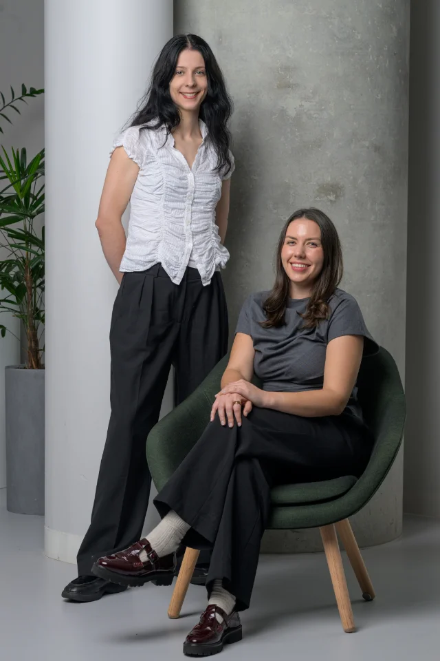

Research, engineering and patient care.
NeuroLog Technologies is based in Melbourne. Our team has over ten years’ experience in epilepsy, seizure forecasting and wearables. We combine research and software development to support patient care and longitudinal neurological research.
The team
Dr Rachel Stirling
CEO and Research Lead
Rachel studies biological rhythms in epilepsy and seizure forecasting. She leads NeuroLog’s research direction.
Rachel’s research background
Dr Michaela Vranic-Peters
CTO and Software Lead
Michaela’s research explores brain dynamics and state transitions. She leads NeuroLog’s software development.
Michaela’s research background
Dr Dean Freestone
Advisor
Professor Ben Brinkmann
Advisor
Associate Professor Pip Karoly
Advisor
A patient-first approach.
We prioritise patient safety and control over personal information. Logging should be manageable, privacy choices clear, and the patient’s own account central to the record.
Our clinical and research tools are designed around that record: summaries for appointments, and data curation that preserves timestamps, sources and gaps.
Work with us.
For clinical pilots, research partnerships or other collaborations, contact contact@neurologapp.com.